基本
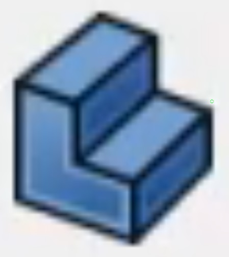
0002_ボディーを作成
 0005_スケッチを作成
0005_スケッチを作成
 ボディー
ボディー
 0250_パッド
0250_パッド
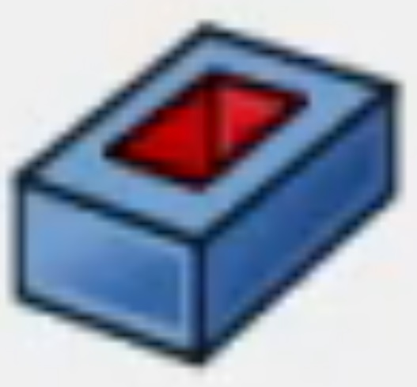
0260_ポケット
スケッチ
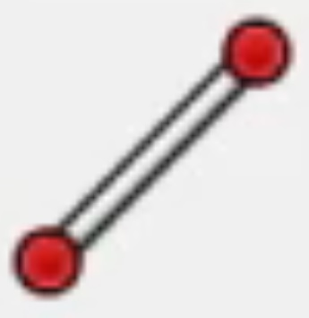
0010_直線
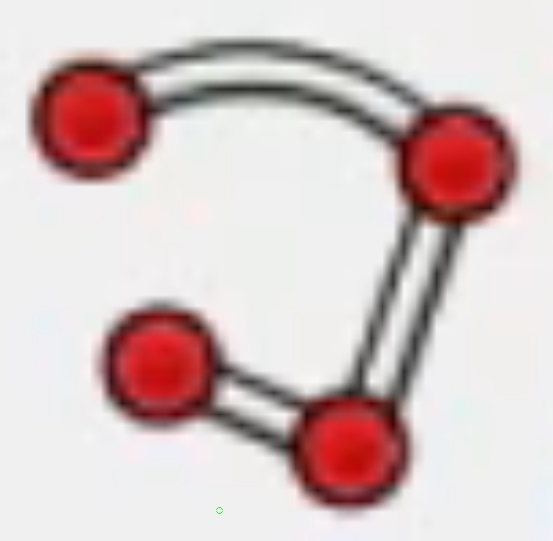
0020_ポリライン
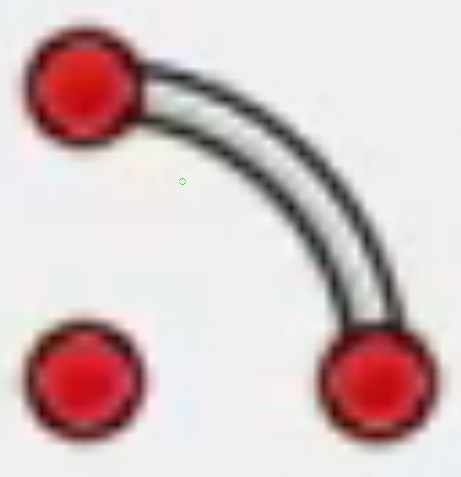
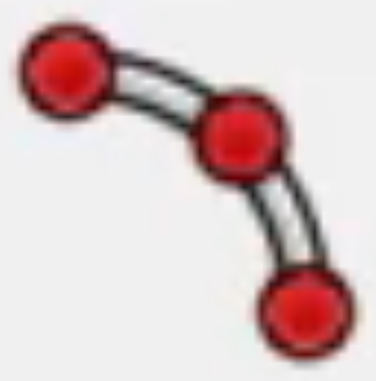
0030_円弧
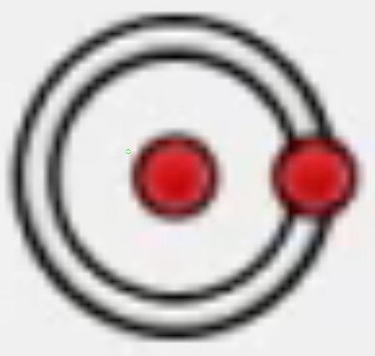
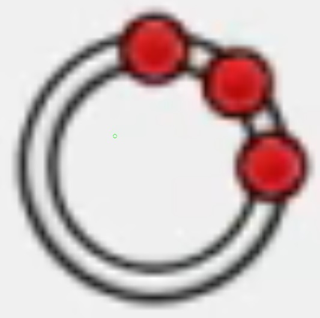
0040_円
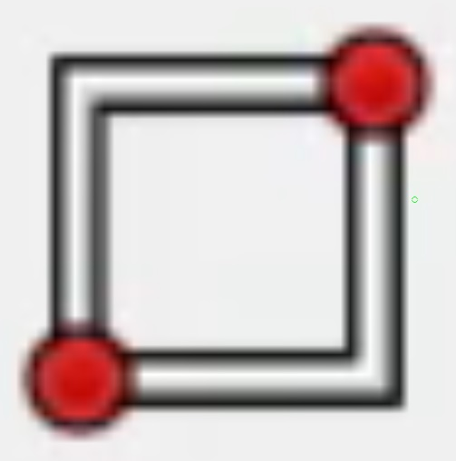
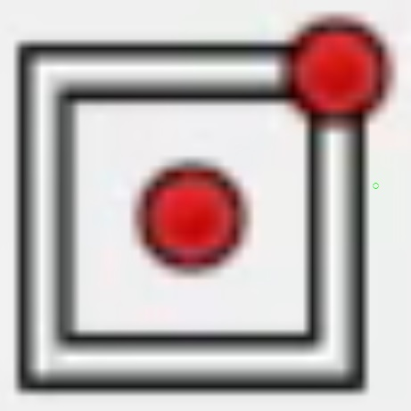
0050_四角形
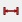
0060_水平距離拘束
0070_垂直距離拘束
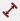
0080_距離拘束
0090_半径拘束
0100_直径拘束
0110_ロック拘束
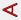
0120_角度拘束
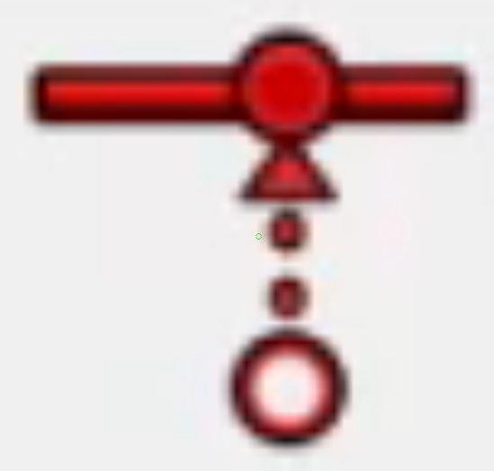
0130_一致拘束
0140_水平拘束
0150_垂直拘束
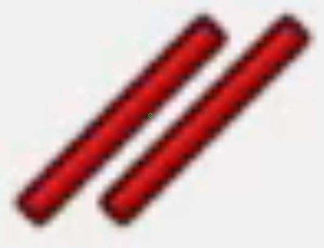
0160_平行拘束
0170_直角拘束
0180_正接拘束
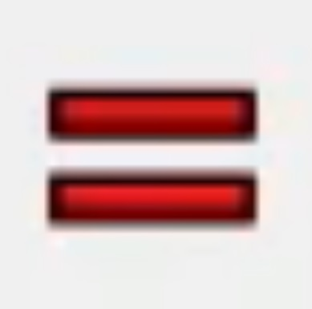
0190_等値拘束
0200_対称拘束
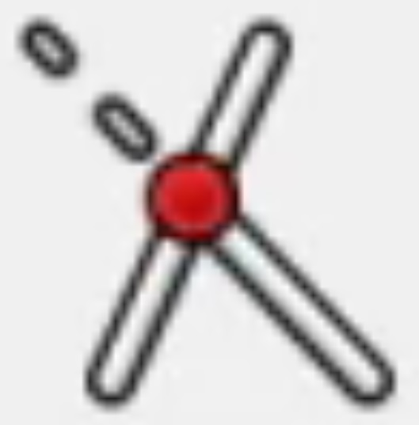
0210_エッジをトリム
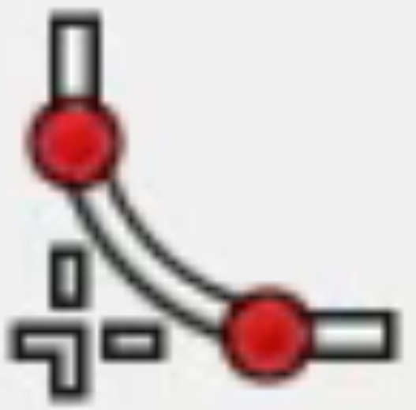
0220_フィレットを作成
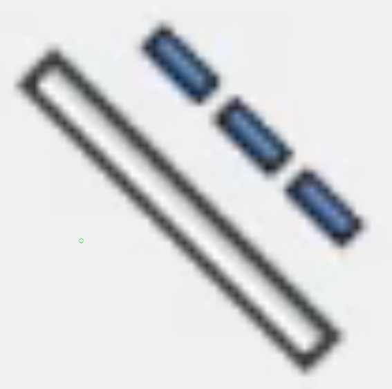
0225_構築ジオメトリの切替
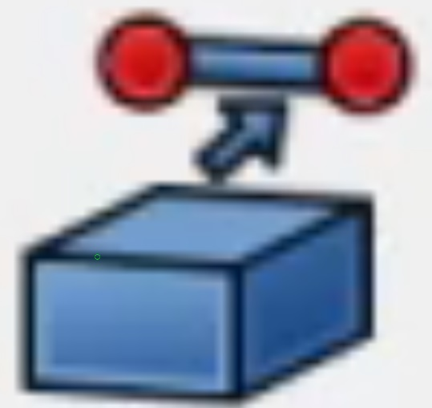
0230_外部ジオメトリを作成
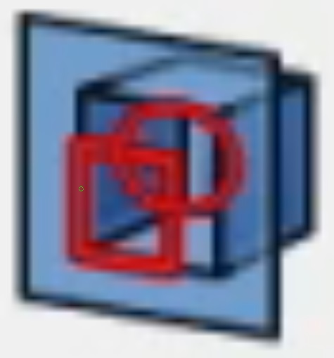
0240_セクション表示